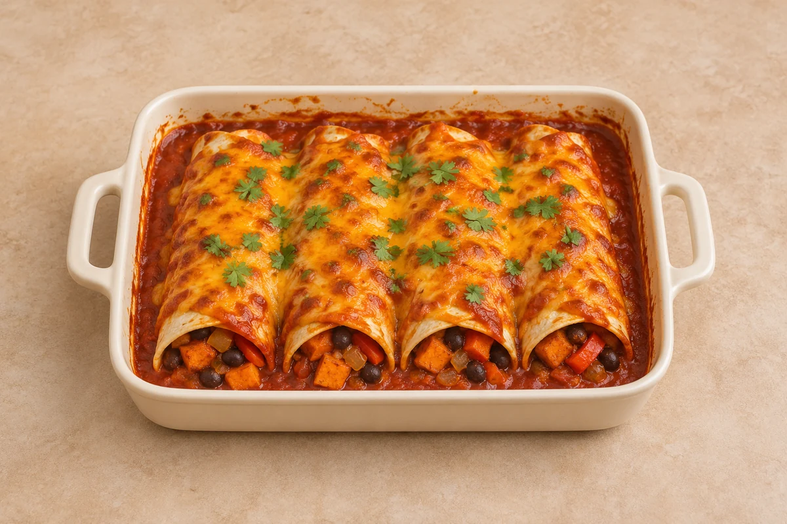

Bakes
Sweet-potato & black-bean enchiladas
Four hearty enchiladas filled with roasted sweet potato, black beans and red pepper, under a golden cheddar topping.
Estimated total: About 1 hr total
people
Ingredient quantities update automatically

Ingredients
Roast sweet potato
Tomato sauce and filling
Assemble and finish
Method
Roast the sweet potato
Heat the oven to 220°C conventional / 200°C fan. Toss the sweet potato with the neutral oil from the Roast sweet potato section. Spread out on a tray and roast for 20–25 minutes, turning once, until tender.Start the sauce
Meanwhile, heat the neutral oil from the Tomato sauce and filling section in a saucepan. Cook the onion and red pepper for 5–6 minutes. Add the garlic, ground cumin, smoked paprika, dried oregano and mild chilli powder; stir for 1 minute.Simmer the tomato sauce
Pour in the passata and vegetable stock. Add the salt and black pepper and simmer gently for 8–10 minutes. Reserve roughly two-fifths of this sauce for the baking dish and topping.Make the filling
Stir the drained black beans and roasted sweet potato into the sauce left in the saucepan. Heat through and remove from the hob. Reduce the oven to 200°C conventional / 180°C fan.Fill and bake
Spread a little reserved sauce in a baking dish. Divide the filling between the flour tortillas, roll up and place seam-side down in the dish. Spoon over the rest of the reserved sauce and sprinkle with the vegetarian cheddar. Bake for 18–22 minutes until bubbling and lightly golden.Finish
Rest for 5 minutes, then finish with the lime juice and fresh coriander. Divide the enchiladas between servings; the recipe makes two tortillas per person.
Tips & leftovers
Storage & leftovers
Cool promptly, refrigerate covered within 2 hours and eat within 48 hours.
Freezing
Freeze cooled individual portions promptly. Defrost fully in the fridge and use within 24 hours. The tortillas will soften slightly after freezing.
Reheating
Reheat once until steaming hot right through the filling. Cover in the oven to prevent the tortillas drying out, then uncover briefly if you want the cheese browned.
Substitutions
Use vegetarian cheddar so the dish stays vegetarian. Kidney beans can replace black beans. For a vegan version, use suitable tortillas and a plant-based cheese alternative.
Keeping leftovers safe
Cool cooked leftovers in small portions and refrigerate within 2 hours. Keep the fridge at 0–5°C and the freezer around −18°C. Freeze suitable leftovers promptly. Defrost fully in the fridge and use within 24 hours. Reheat only once, until steaming hot all the way through. Follow any shorter use-by or opened-pack instructions; using older cooked ingredients does not restart their storage time.
Food-safety guidance: Food Standards Agency: chilling and freezing · reheating leftovers.